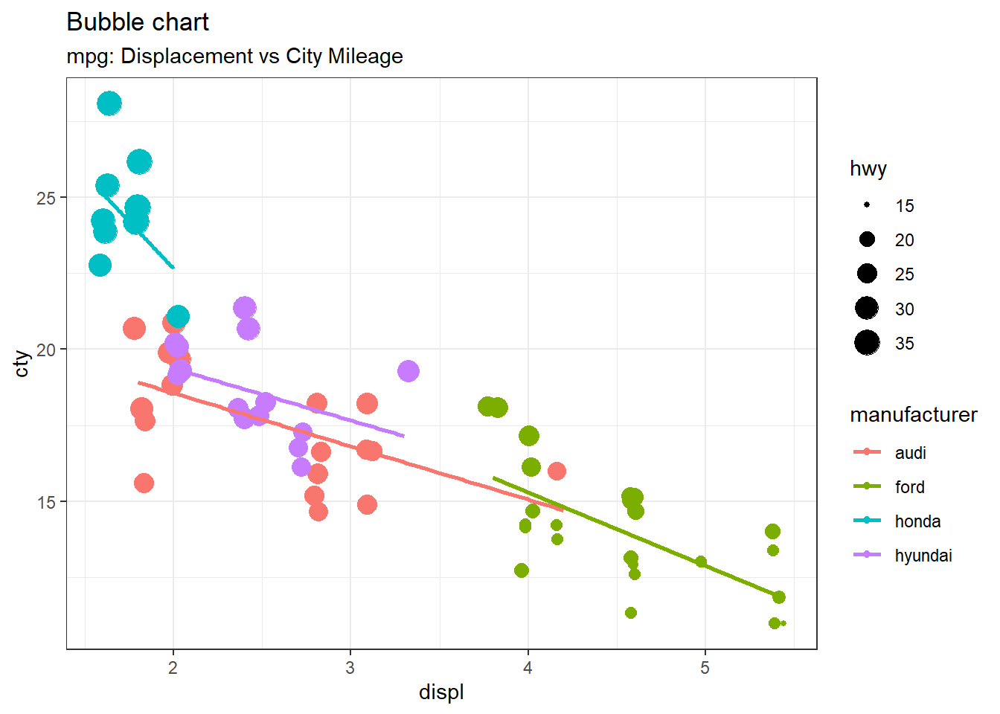

Chapter 3 R vs. Excel
3.1 Both are useful
Data analytics are increasingly important components of decision-making in any business. Whether you’re a part of a marketing team that needs to generate visuals to highlight industry trends, or you’re looking to generate financial statements, you will need an analytics program to help you develop your reports and effectively communicate your findings.
Both R and Excel are excellent data analytics tools, but they each have distinct functionality.
Please make sure you can explain the distict funtions of both R and Excel! YOU WILL NEED TO KNOW THIS!
Excel is a well-known software program included in the Microsoft Office Suite. Used to create spreadsheets, execute calculations, produce charts, and perform statistical analysis, Excel is used by many professionals across a variety of industries. PC’s BADM 299 prepares you well for using Excel.
R is a free, open-source programming language and software environment that’s frequently used in big data analysis and statistical computing. R has many advanced functions and capabilities.
3.2 Differences Between R and Excel
When choosing between R and Excel, it’s important to understand how either software can get you the results you need. Here are some key differences between R and Excel to help you decide which makes the most sense to use.
3.3 Ease of Use & Learning the Software
Most people have likely already learned at least a few basic tips in Microsoft Excel. That’s one substantial benefit of using Excel—the initial learning curve is quite minimal, and most analysis can be done via point-and-click on the top panel. Once a user imports their data into the program, it’s not very hard to make basic graphs and charts.
R is a programming language, however, meaning the initial learning curve is steeper. It will take most at least a few weeks to familiarize themselves with the interface and master the various functions. Luckily, using R can quickly become second-nature with practice.
3.4 Replicating Analysis
R, while less user-friendly with a more intimidating user interface, has the capability to reproduce analyses repeatedly and with very different datasets. This can be incredibly helpful for large projects with multiple data sets, as you’ll keep everything consistent and clean, without having to rewrite the script each time.
Since Excel’s user interface is point-and-click, you’ll need to rely on memory and repetition frequently. You cannot import codes and scripts as you would with R, so you’ll have to “reinvent the wheel” to perform the same analysis across different data sets. This is not detrimental if you are doing basic statistics, but it may become time-consuming with more complicated analyses.
For example, let’s say you have thoroughly analyzed the analytics of 1 football season. How could R (vs Excel) help you quickly analyze a new season’s data?
3.5 Visualization
When deciding between R and Excel, ask yourself, “How detailed do my visualizations need to be in order to achieve my goal(s)?” In Excel, for example, you can quickly highlight a group of cells and make a simple chart for PowerPoint. If you need a more comprehensive graph, however, R may be your best bet. R can produce incredibly attractive, detailed visuals that can help stakeholders understand your findings.
It all comes down to what you need your graphics to do. If you’re just looking to cobble together a quick-and-dirty presentation to visualize data for your coworkers, then making simple straightforward charts in Excel will suffice. For those planning to publish large amounts of complicated data to various stakeholders, spending the time in R to create impressive interactive visual representations will likely be worth your while.
For example, here’s and example of a pretty easy visualization in R that would be challenging to do (and update) in Excel.

3.6 Packages
In R, the fundamental unit of shareable code is the package. A package bundles together code, data, documentation, and tests, and is easy to share with others. As of June 2019, there were over 14,000 packages available on the Comprehensive R Archive Network, or CRAN, the public clearing house for R packages. This huge variety of packages is one of the reasons that R is so successful: the chances are that someone has already solved a problem that you’re working on, and you can benefit from their work by downloading their package.
But packages are useful even if you never share your code. As Hilary Parker says in her introduction to packages: “Seriously, it doesn’t have to be about sharing your code (although that is an added benefit!). It is about saving yourself time.” Organising code in a package makes your life easier because packages come with conventions. For example, you put R code in R/, you put tests in tests/ and you put data in data/. These conventions are helpful because:
- They save you time — you don’t need to think about the best way to organise a project, you can just follow a template.
- Standardized conventions lead to standardized tools — if you buy into R’s package conventions, you get many tools for free.
We will chat more about packages, but for fun check out the links below…
3.7 Careers
Aptitude with Excel and R are incredibly valuable competencies that are in-demand across a variety of industries. Countless jobs are looking for applicants with at least some Excel experience (pivot tables look really good on a resumé), but R has a higher earning potential and is more in-demand than Excel.
R is one of the most popular programming languages and is an industry-standard for data analytics and data science. If you want to enter either field, there’s a good chance you’ll have a competitive advantage by knowing R. Entry-level jobs for those focusing on R also tend to make a high salary, frequently starting off earning more than $75,000.
Countless job listings also require Excel competency. From administrative assistants, marketers, academics, and more, everyone is expected to use Excel to some degree, whereas 10 to 15 years ago it was optional. Having a good background in Excel is still attractive on a resumé and will help to land a career with a high earning potential, but there are not many jobs looking for Excel skills alone.
3.8 Summary – Using R and Excel
R and Excel are beneficial in different ways. Excel starts off easier to learn and is frequently cited as the go-to program for reporting, thanks to its speed and efficiency. R is designed to handle larger data sets, to be reproducible, and to create more detailed visualizations. It’s not a question of choosing between R and Excel, but deciding which program to use for different needs.